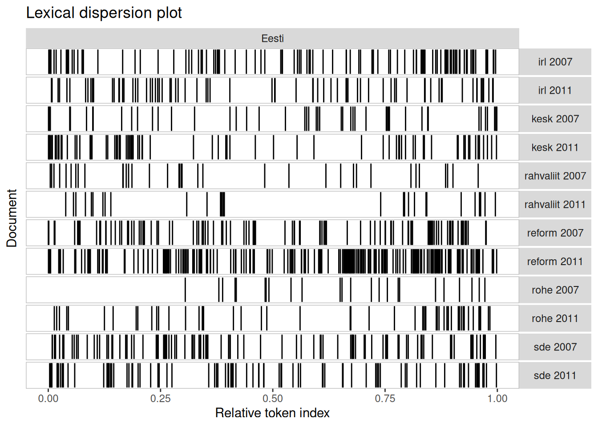
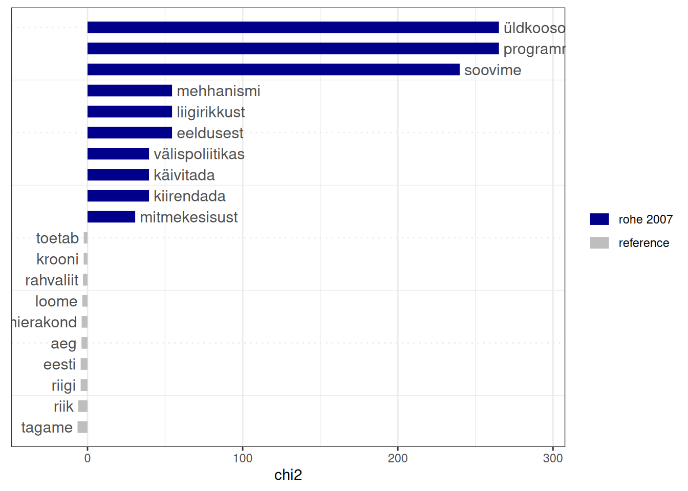

Andmed ei ole alati hoiustatud analüüsimiseks mugavates tabelites. Sageli on tulenevalt teabe olemusest palju loomulikum esitada andmed mõnel muul kujul. Üks näide sellest on teksti sisaldavad dokumendid. Dokumentideks võime selles tähenduses pidada ükskõik mis pikkusega tekste, alates sotsiaalmeedia sõnumitest ja lõpetades ilukirjanduslike teostega. Kuigi harjumuspärane ja loomulik on analüüsida dokumente neid lihtsalt lugedes, ei anna see nendest sageli piisavalt ülevaatlikku arusaamist. Nii on see eriti suurel arvul mahukate dokumentide korral. Tekstina esitatud teabe saab teisendada aga arvudeks, mis võimaldab läheneda teksti sisule kvantitatiivselt. Selleks on välja mõeldud mitmesuguseid protseduure ja neile vastavaid tööriistu, mille kasutamist nimetatakse andmeteadustes tekstikaeveks.
Mõiste
Testikaeve (text mining) seisneb dokumentide kvantitatiivses analüüsimises, mille käigus kirjeldatakse dokumente, tuvastatakse nendest teemad või leitakse seosed sõnade ja dokumentide vahel. Vastavad protseduurid põhinevad peamiselt sõnade või ka sõnapaaride esinemisel: sagedus, asukoht teiste sõnade suhtes ja esinemine dokumentides.
Teksti kvantitatiivne uurimine võimaldab muuhulgas täita alljärgnevaid ülesandeid:
tekstis esinevate teemade tuvastamine,
seoste otsimine tekstis esinevate sõnade ja väljendite vahel,
dokumentide klassifitseerimine ette antud klassidesse,
dokumentide klastritesse jaotamine,
teksti sisu näitlikustamine joonistel,
dokumendist kokkuvõtete tegemine.
Seega saame tekstikaevet kasutades vastata nt alljärgnevatele küsimustele:
Mis on dokumendis sagedamini esinevad sõnad ja teemad?
Mille poolest üks teatud dokument erineb teistest?
Mis seosed esinevad dokumendis kasutatud väljendite vahel?
Järgnevalt uurime teksikaeve meetodite rakendamist 2007. ja 2011. aasta Eesti erakondade valimisprogrammide näitel.
Paljud dokumendid on kättesaadavaks tehtud .pdf vormingus dokumentidena. Selliste tekstide R keele objekti sisestamiseks saame kasutada funktsiooni pdf_text() laiendusest pdftools. Kasutades seda omakorda funktsioonis sapply(), saame mitu .pdf vormingus faili sisestada R töölauale vektorina, milles iga element on üks dokument
Teksti uurimiseks R keeles on loodud mitu laiendust, millest igaühel on oma lähenemine sellele, mis kujul tekste objektides hoiustada ja milliseid arvutusi tekstidega teha. Järgnevalt kasutame quanteda laienduste kogumikku, kuigi ära märkimist väärivad ka tekstikaeve jaoks mõeldud laiendused tm ja tidytext.
Uuritavat dokumenti või ka mitme sellise dokumendi kogumit nimetatakse korpuseks (corpus). Laienduse quanteda funktsioonide kasutamiseks tuleks dokumente sisaldava vektor eelnevalt korpusena vormistatud objektiks teisendada funktsiooniga corpus().
korpus <-corpus(dokumendid)korpus
Corpus consisting of 12 documents.
andmed/cmp/irl_2007.pdf :
"Terve pere – Terve mõistus – Terve Eesti Isamaa ja Res Publi..."
andmed/cmp/irl_2011.pdf :
"Esileht » IRL-i programm 2011-2015 IRL-i programm 2011-2015 ..."
andmed/cmp/keskerakond_2007.pdf :
" ..."
andmed/cmp/keskerakond_2011.pdf :
" Vastu võetud Eesti Keskerakonna volikogu istungil..."
andmed/cmp/rahvaliit_2007.pdf :
"ERL valimisplatvorm 2007.aas..."
andmed/cmp/rahvaliit_2011.pdf :
"EESTIMAIST LEIBA JA TÖÖD! EESTIMAA RAHVALIIDU PLATVORM 2011...."
[ reached max_ndoc ... 6 more documents ]
Korpuses olevatele dokumentidele võime määrata hilisemaks analüüsimiseks dokumentide nimed, aga ka muud tunnused. Antud juhul võikisme määrata igale dokumendile erakonna nimetuse ja aastaarvu.
# Täpsustame dokumentide nimetusederakonnad <-c('irl', 'kesk', 'rahvaliit', 'reform', 'rohe', 'sde')names(korpus) <-paste(rep(erakonnad, each =2), c(2007, 2011))names(korpus)
Paljude teksti kvantitaiivse analüüsimise protseduurid põhinevad sõnade sagedustel. Tihti on aga sõna liiga kitsas mõiste uuritava üksuse kirjeldamiseks, mistõttu on tekstikaeves analüüsi ühikuks tegelikult sõne (token). Sõne võib sisaldda ka rohkem kui ühte üksteisele piisavalt sagedasti järgnevat sõna. Sõnede uurimiseks tuleb esmalt korpuses esinevad dokumendid teisendada sõnede loeteludeks. Seda tegevust võib nimetada sõnestamiseks (tokenization). Sõnestada saame funktsiooniga tokens(), mille rakendamisel võime dokumentidest ühtlasi eemaldada ka kirjavahemärgid, sümbolid, arvud ja tühikud.
Paljud tekstis sageli esinevad sõnad ei ole sisulised ega võimalda dokumenti temaatiliselt iseloomustada ega teistest tekstidest eristada. Sellised sõnad on nt sidesõnad ja asesõnad. Dokumentide analüüsimisel on need sõnad müra, mis raskendavad mustrite ja seoste leidmist. Tekstikaeves nimetatakse taolisi sõnu stoppsõnadeks (stopwords). Stoppsõnad saame sõnedest eemaldada funktsiooniga tokens_remove(). Inglisekeelsete stoppsõnad saame eemaldada argumendiga pattern = stopwords('en'). Eesti keele stoppsõnu aga vastavas funktsioonis ei ole, mistõttu peame need käsitsi arvutisse laadima1, R töölauale sisestama ja seejärel vastava funktsiooni argumendina määrama.
Üks ja sama sõna võib esineda mitmel erineval kujul, nt ainsuses ja mitmuses, eessõnadega ja eessõnadeta. Tegusõnadel on paljudes keeltes pöörded. Eesti keeles esinevad nimisõnad veel ka erinevates käänetes. Enne sõnede analüüsimist need seetõttu algvormistatakse (lemmatizing) ehk sõnad asendatakse nende algvormidega (lemmadega). Ingliskeelsete sõnede puhul saame kasutada funktsiooni tokens_wordstem(). Eestikeelsete sõnade algvormid koos kõikvõimalike vormidega ei ole paraku avalikult leitavad, mistõttu uuritavat korpust me algvormistada ei saa2.
Võiksime arvesse võtta ka asjaolu, et teatud nähtused esitatakse rohkem kui ühe sõnana. Rohkem kui ühest sõnast koosnevad väljendid on sõnaühendid (collocations, n-grams). Dokumentides esinevate sõnade järjestuse alusel saame sõnaühendid leida funktsiooniga textstat_collocations(), milles saame määrata mh leitavate sõnaühendite väikseima sageduse (min_count = 20) ja vähina sõnade arvu, mille ühendeid otsime (size = 2).
collocation count count_nested length lambda z
1 euroopa liidu 122 0 2 8.171880 27.294803
2 kohalike omavalitsuste 44 0 2 7.699716 26.527861
3 kohaliku omavalitsuse 44 0 2 8.257028 24.637050
4 aasta riigikogu 25 0 2 6.770979 22.076934
5 seame eesmärgiks 25 0 2 7.152438 21.286044
6 eesti keele 84 0 2 5.579262 20.066599
7 keele kultuuri 21 0 2 5.513494 19.951902
8 riigikogu valimistel 20 0 2 7.892776 19.758598
9 puuetega inimeste 22 0 2 5.970079 19.396205
10 avaliku sektori 22 0 2 7.642845 19.224620
11 eesti rahva 23 0 2 2.801869 11.562169
12 eesti riigi 26 0 2 1.410214 6.879928
13 euroopa liidus 25 0 2 9.358612 6.546668
14 toetame eesti 20 0 2 1.009869 4.402414
Funktsioon tokens_compound() asendab korpuses eraldi sõnandena esinevad sõnad neile vastavate sõnaühenditega.
sõned <-tokens_compound(sõned, sõnaühendid)
30.3 Maatriksid
Sõnestatud korpuse alusel saame küll lihtsasti leida nt sõnade sagedused, aga huvitavamad mustrid ilmnevad sõnade ja dokumentide vaheliste seoste uurimisel. Selleks on vajalik korpus teisendada sageduste maatriksiks. Sellistes maatriksites nimetatkse sõnau sageli hoopis terminiteks (term). Nii võib eristada teistest ka harva esinevaid termineid (sparse terms), mis moodustavad tavaliselt suurema osa kõikidest terminitest.
Dokumendi-termini maatriksis (document-feature matrix) on ridades dokumendid ja veergudes kõik korpuses esinevad terminid. Lahtrites on seega vähemalt vaikimisi iga termini esinemissagedus igas dokumendis.
dokMat <-dfm(sõned)dokMat
Document-feature matrix of: 12 documents, 18,498 features (84.91% sparse) and 2 docvars.
features
docs terve pere mõistus eesti isamaa res publica liidu
irl 2007 16 7 3 110 2 2 2 3
irl 2011 1 2 0 74 7 7 7 4
kesk 2007 1 3 0 48 0 0 0 0
kesk 2011 1 2 0 80 1 1 1 3
rahvaliit 2007 0 0 0 36 0 0 0 0
rahvaliit 2011 0 2 0 29 0 0 0 0
features
docs valitsemisprogramm valitsusele
irl 2007 1 1
irl 2011 1 0
kesk 2007 0 0
kesk 2011 0 0
rahvaliit 2007 0 0
rahvaliit 2011 0 0
[ reached max_ndoc ... 6 more documents, reached max_nfeat ... 18,488 more features ]
Terminite maatriksis (feature co-occurrence matrix) on ridades ja ka veergudes terminid. Lahtrites on nende terminite koos esinemised. Dokumentide uurimisel saame otsida sõnade koos esinemisi kas
sõnade vahel lähtudes nende lähedusest või
mitme dokumendi vahel sõnade koos esinemise alusel.
Sealjuures on esimene lähenemine sobilikum üksikute pikkade dokumentide korral, viimane eeldab aga palju dokumente.
Kasutades argumente context = 'document', window = 5, loendame kui mitu korda esineb iga sõnade paar teineteisest kuni viie sõna kaugusel.
Feature co-occurrence matrix of: 18,498 by 18,498 features.
features
features terve pere mõistus eesti isamaa res publica liidu
terve 8 7 5 25 2 2 1 1
pere 0 0 1 6 1 0 0 0
mõistus 0 0 0 1 1 1 1 0
eesti 0 0 0 224 5 4 4 5
isamaa 0 0 0 0 0 10 10 7
res 0 0 0 0 0 0 10 7
publica 0 0 0 0 0 0 0 7
liidu 0 0 0 0 0 0 0 4
valitsemisprogramm 0 0 0 0 0 0 0 0
valitsusele 0 0 0 0 0 0 0 0
features
features valitsemisprogramm valitsusele
terve 0 0
pere 0 0
mõistus 0 0
eesti 2 1
isamaa 2 0
res 2 1
publica 2 1
liidu 2 1
valitsemisprogramm 0 1
valitsusele 0 0
[ reached max_feat ... 18,488 more features, reached max_nfeat ... 18,488 more features ]
Argumendi context = 'document' korral näitavad saadud sagedused, kui mitmes dokumendis esineb vastav sõnade paar korraga.
termMat <-fcm(sõned, context ='document')termMat
Feature co-occurrence matrix of: 18,498 by 18,498 features.
features
features terve pere mõistus eesti isamaa res publica liidu
terve 129 137 48 3183 40 40 40 55
pere 0 36 21 2896 30 30 30 41
mõistus 0 0 3 330 6 6 6 9
eesti 0 0 0 61126 818 818 818 1147
isamaa 0 0 0 0 22 54 54 37
res 0 0 0 0 0 22 54 37
publica 0 0 0 0 0 0 22 37
liidu 0 0 0 0 0 0 0 13
valitsemisprogramm 0 0 0 0 0 0 0 0
valitsusele 0 0 0 0 0 0 0 0
features
features valitsemisprogramm valitsusele
terve 17 19
pere 9 9
mõistus 3 3
eesti 184 219
isamaa 9 2
res 9 2
publica 9 2
liidu 7 3
valitsemisprogramm 0 1
valitsusele 0 0
[ reached max_feat ... 18,488 more features, reached max_nfeat ... 18,488 more features ]
30.4 Sõnade sagedused
Kõige lihtsam viis dokumentide kirjeldamiseks on lugeda kokku sõnad. Alustuseks võime võrrelda dokumente kõikide sõnade, kordumatute sõnade (type) ja ka lausete arvu alusel.
Ülevaate tekstide sisust annavad sõnade sagedused (bag-of-words, word frequencies), mis näitavad lihtsalt kui mitu korda sõna esineb. Kõige sagedamini esinevad sõnad annavad lihtsa ülevaate korpuse sisust.
sage <-textstat_frequency(dokMat, n =10)sage
feature frequency rank docfreq group
1 eesti 1001 1 12 all
2 toetame 340 2 12 all
3 riigi 296 3 12 all
4 tagame 170 4 11 all
5 riik 158 5 11 all
6 loome 139 6 12 all
7 aeg 129 7 6 all
8 inimeste 129 7 12 all
9 reformierakond 126 9 2 all
10 euroopa_liidu 122 10 12 all
Neid sagedusi saame samuti uurida mingi korpuses esineva igat dokumenti esindava tunnuse lõikes.
sageDok <-textstat_frequency(dokMat, groups = korpus$erakond, n =3)sageDok
feature frequency rank docfreq group
1 eesti 184 1 2 irl
2 toetame 83 2 2 irl
3 riigi 49 3 2 irl
4 eesti 128 1 2 kesk
5 toetame 48 2 2 kesk
6 riigi 47 3 2 kesk
7 rahvaliit 104 1 2 rahvaliit
8 eesti 65 2 2 rahvaliit
9 riik 22 3 2 rahvaliit
10 eesti 356 1 2 reform
11 reformierakond 126 2 2 reform
12 riigi 82 3 2 reform
13 aeg 119 1 1 rohe
14 eesti 75 2 2 rohe
15 soovime 24 3 2 rohe
16 eesti 193 1 2 sde
17 toetame 128 2 2 sde
18 riigi 79 3 2 sde
Sõnade sagedusi kujutatakse sageli sõnapilvena (word cloud). Sõnapilve suuruse saame määrata nt argumentidega min_count või max_words.
Ka sõnapilvel saame esitada sagedused mingi tunnuse kuni kaheksa rühma võrdluses. Kui sama sõna esineb enam kui kahes rühmas, siis määratakse selle värv rühma järgi, milles see sõna kõige sagedasem on.
Saame valitud sõnade esinemist kujutada ka asukoha järgi tekstis, uurides sõnade konteksti (keyword in context, kwic). Kontekst on antud juhul dokumendid.
textplot_xray(kwic(sõned, pattern ="Eesti"))

30.5 Sõnasus
Konkreetseid dokumente saame temaatiliselt iseloomustada selle alusel, kuidas need erinevad sõnade esinemise poolest teistest dokumentidest. Seda erinemist võib nimetada sõnasuseks (keyness). Sõnasuse arvutamisel leitakse valitud mõõdiku alusel, millised sõnad esinevad valitud dokumendis sagedamini ja harvemini kui teistes dokumentides. Mõõdiku saame määrata argumendiga measure ja dokumendi määrada argumendi target abil. Tulemuse võime kuvada tulpjoonisel, määrates esitatavate sõnade arvu (n).
sõnasus <-textstat_keyness(dokMat, target ='rohe 2007', measure ='chi2')textplot_keyness(sõnasus, n =10)

30.6 TF-IDF
Lisaks sõnasusele hinnatakse sagli dokumendis esineva sõna tähtsust igas dokumendis. Seda esindavat mõõdikut nimetatakse lühendiga tf-idf (term frequency - inverse document frequency). See arvutatakse ühe termini \(t\) suhtelise sageduse ja dokumendi pöördsageduse korrutis.
kus suhteline sõnade sagedus (term frequency) on sõna osakaal kõikidest sõnadest dokumendis:
\[\text{tf} (t) = \frac{\text{termini t sagedus dokumendis}}{\text{kõikide sõnade arv dokumendis}}\]
ja dokumendi pöördsagedus (inverse document frequency) on sõna tähtsus terves korpuses:
\[\text{idf} (t) = ln \frac{\text{dokumentide arv}}{\text{terminit t sisaldavate dokumentide arv}}.\]
Mõõdiku väärtus on seda kõrgem, mida sagedamini esineb termin dokumendis, aga mida harvemini teistes dokumentides. Mõni tavaline sõna võib olla küll dokumendis sage, aga kui see on sage ka teistes dokumentides, siis ei iseloomusta see sõna hästi just vaatlusalust dokumenti. Selleks on vajalik, et see sõna teistes dokumentides sage ei oleks. Niisiis näitab tf-idf sõna tähtsust dokumendi kontekstis, arvestades sealjuures ka sõna üldist tähtsust.
tfidf <-dfm_tfidf(dokMat)tfidf
Document-feature matrix of: 12 documents, 18,498 features (84.91% sparse) and 2 docvars.
features
docs terve pere mõistus eesti isamaa res publica
irl 2007 3.7453313 0.5542687 3.237544 0 1.20412 1.20412 1.20412
irl 2011 0.2340832 0.1583625 0 0 4.21442 4.21442 4.21442
kesk 2007 0.2340832 0.2375437 0 0 0 0 0
kesk 2011 0.2340832 0.1583625 0 0 0.60206 0.60206 0.60206
rahvaliit 2007 0 0 0 0 0 0 0
rahvaliit 2011 0 0.1583625 0 0 0 0 0
features
docs liidu valitsemisprogramm valitsusele
irl 2007 1.140634 0.7781513 0.7781513
irl 2011 1.520845 0.7781513 0
kesk 2007 0 0 0
kesk 2011 1.140634 0 0
rahvaliit 2007 0 0 0
rahvaliit 2011 0 0 0
[ reached max_ndoc ... 6 more documents, reached max_nfeat ... 18,488 more features ]
30.7 Sõnade võrgustik
Seosed sõnade vahel tulevad kõige ilmekamalt esile võrgustikjoonisel. Et kuvatud sõnade arv ei oleks liiga suur ja joonis seega liiga kirju, peaksime esmalt tegema sõnade seast valiku. Kohane on valida nt kõige sagedasemad sõnad. Seda saame teha taaskord funktsiooniga topfeatures(), mille tulemuseks saadud sageduste nimetused saame valida terminite maatriksist funktsiooniga fcm_select().
Seejärel saame vähendatud terminite maatriksis esinevad seosed kujutada võrgustikuna funktsiooni textplot_network() abil. Nii joonistatud võrgustikul on näitavad jooned sõnade vahel nende koos esinemisi vastavalt sellele, kuidas see on määratud terminite maatriksis.
Mõnikord võib olla vajalik dokumentide rühmitamine. Selleks saame kasuada hierarhilist klasterdamist. Dokumentide vahelised paariviisilised kaugused saame arvutada nt sõnade sageduste alusel, millisel juhul on samu sõnu sama sagedasti kasutavad dokumendid on üksteisele lähedal. Dokumendi termine maatriksi alusel saame dokumentide läheduse leida funktsiooniga textstat_dist(). Leitud kauguste alusel saame arvutada ja joonistada klastripuu nii nagu iga teise kauguste maatriksi alusel.
Keelekasutust dokumentides saab mõõta mitmest küljest. Dokumendi loetavust saame hinnata tähemärkide, kõikide sõnade, keeruliste sõnade, silpide ja lausete arvu ja pikkuse ning nende omavaheliste suhete alusel. Võimalusi nende tegurite kombineerimiseks on väga palju, aga eestikeelsete tekstide korral on sobilik kasutada mõõdikuid, mis ei võta aluseks sõnade tähendusi ega silpide arvu. Võime võrrelda tekste näiteks keskmise lause pikkuse alusel sõnades.
Keelelise mitmekesisuse mõõtmiseks on samuti suur valik mõõdikuid, millest paljud lähtuvad ühel või teisel viisil kõikide sõnade ja kordumatute sõnade suhtest. Neist võib-olla kõige lihtsam TTR (type-token ratio) on lihtsalt kordumatute sõnade ja kõikide sõnade arvu suhe.
Saadud mõõdiku väärtuste alusel saame teha kokkuvõtteid ka dokumentidega seotud tunnuste lõikes. Nt võime leida iga erakonna programmide keskmise keelelise mitmekesisuse.
Lisaks keerukusele on levinud ka meelestatuse (sentiment) analüüs. Selle käigus määratakse igale sõnale, kas see väljendab negatiivset või positiivset emotsiooni. Selle määratluse alusel saame hinnata iga dokumendile meelestatuse. See protseduur on arusaadaval põhjusel väga levinud nt sotsiaalmeedia sõnumite uurimisel. Paraku ei ole eesti keele korpuse kohta veel olemas sõnastikku, milles oleks määratud iga sõna meelsus. Seetõttu antud dokumentides me meelestatust uurida ei saa.
30.10 Teemad
Keerulisemad tekstikaeve protseduurid võimaldavad luua teemade mudeleid (topic models). Üks selline protseduur on LDA (Latent Dirichlet Allocation). See võimaldab dokumendi-termini maatriksist leida ette antud arvul teemadega seotud märksõnad ja määrata igale dokumendile kõige sobivama teema, mida need märksõnad esindavad. Teemade paremaks eristamiseks on mõistlik kasutada TF-IDF maatriksit.
library('seededlda')teemad <-textmodel_lda(tfidf, k =6)terms(teemad)